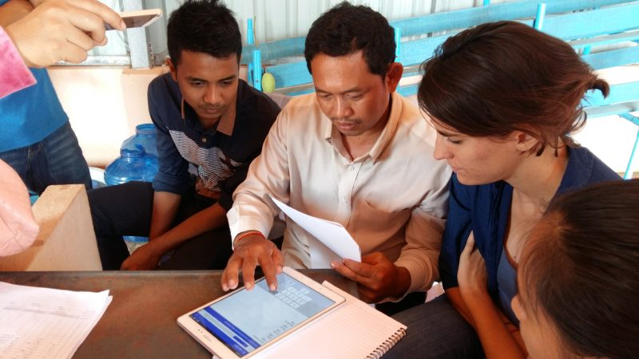
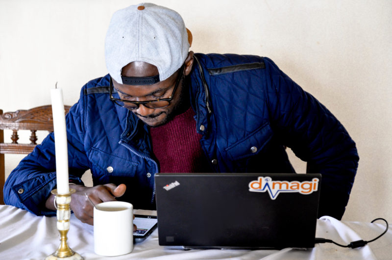
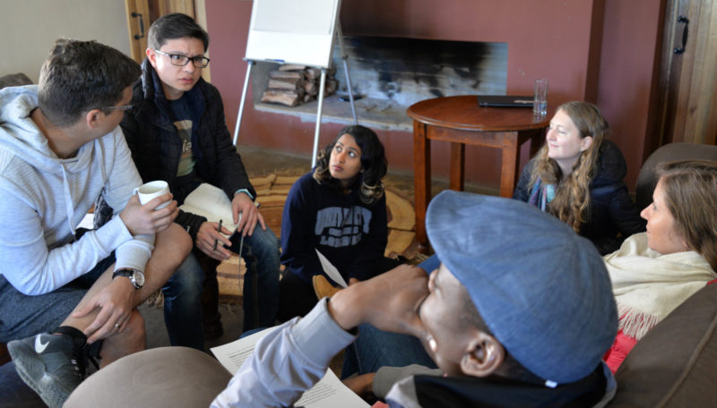
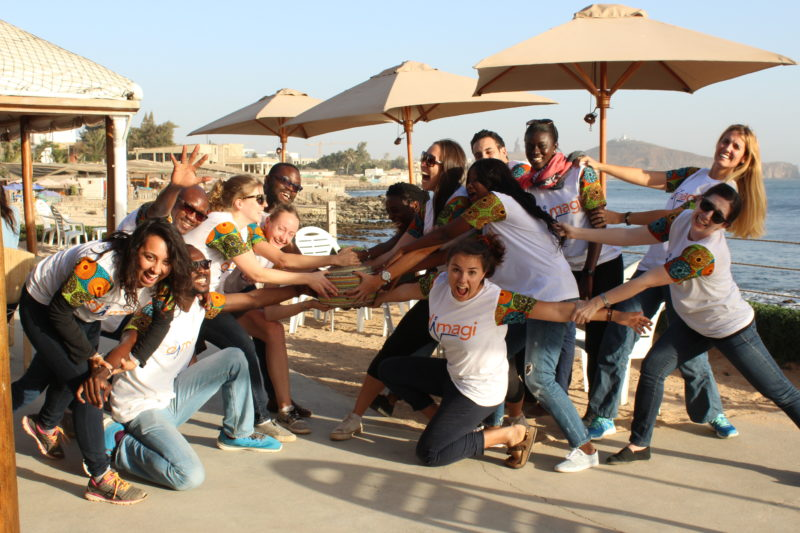

Dimagi started out with a single field manager in 2010. He took on a role in Zambia, working with local staff to build capacity, design software and hardware systems, and train users. Since then, we have built up our Global Services team to over 70 people working all over the world to help design, implement, and scale new programs.
But no two field managers are the same. Our team members have personalized their roles, based on their interest in different locations, sectors, and populations. Learn about what life is like for the Global Services team at Dimagi in their own words:
What does a day in your life at work look like?
Most of our field managers split their time between the office and the field. Many of them mention how the planning and preparation side of their job can often go overlooked, but how important it is to make sure the field side goes according to plan.
“No two days are the same, so the easy answer is that it depends! Work from my desk vs. work while on a project site can vary quite a bit. Most of the time is behind my desk, building apps, exporting data, keeping documentation up-to-date, and collaborating with my team on a number of projects. However, when I’m on a project site, I am fortunate to be fully immersed in a single project, working with the partners to do research, prepare for an application launch, or facilitate a training.”
“My days involves a lot of coordination - preparing my team for meetings, meetings, and then the follow up after those meetings. There is a lot of work done within project teams to align on agendas and inputs for various stakeholders, like ministries, donors, etc. If I’m leading a meeting, it gets significantly more hectic, as I have to design the presentation materials in addition to all the other prep work I mentioned.”

What is the best thing about your job?
As you might guess, our Global Services team loves to travel. The variety of both their work and its locations is a source of inspiration for them, and they are always looking to learn and create more.
“Field visits! Traveling around the world to meet people who use our tools to improve their communities, cities, and countries will always be the best part of my job.”
“Not only being exposed to a variety of sectors and subject areas but learning from experts in those fields is a great perk of the job.”
“The travel is excellent, but I also love the more problem-solving side of my work, where I can help translate programmatic requirements into living technical specifications that shape the design and structure of the final product. Then we get to actually build it!”
“There are so many great things about my job. Presenting a real app to real users is so gratifying, following a project from the beginning all the way to launch gives you the whole picture. My colleagues are a joy to work with, and I have so much flexibility in terms of how I can tackle my responsibilities. I really couldn’t ask for more.”
What is the worst part of your job?
Because of how much they care about the impact of their work, one of the hardest parts of the job for many field managers can be when there are challenges to project success that lie outside their specific control.
“Sometimes technology can be frustrating! So, I think the worst part of my job would be when I’ve spent a long time working out the bugs in a program’s application, but for reasons beyond my control, few workers end up actually using it.”
“It can be frustrating when you offer advice that isn’t taken, and the program suffers because of it. Or even when your next steps depend on a decision from someone else who takes too long to make their choice.”

What is one thing you have learned in the last year?
Our Global Services teammates have a constant growth mindset, looking to learn from their last project as much as they learn from the people around them.
“I have learned a lot about how to develop a better CommCare application. No two projects are the same, and the platform is always improving, so there is always more you can learn about how to personalize the experience to the program.”
“I learned to trust myself and my decisions more and how to focus on the difference I can make. These projects are made of up a lot of different choices, so there are plenty of opportunities to grow from them.”
“I learned that change is the only constant. Given the numerous stakeholders I work with and the size of my team, priorities can change quickly, and you have to stay nimble.”
“I learned a lot about how the government ministries operate - what incentivizes them and how our donors interact with them. The way we roadmap and prioritize for them and their concerns has been interesting to figure out, and the way we communicate and maneuver discussions with different levels of stakeholders to protect our teams has been eye-opening, as well.”
What impact does your work have?
Dimagi’s primary objective is our impact, which, for our field managers, is often their main source of motivation. There are numerous ways this impact can be felt.
“Our work can bring awareness on a large scale to the importance of using data to drive program management. We get to see these organizations open up to the wealth of information available to them to improve outcomes for their beneficiaries, which is always a rewarding feeling.”
“When everything comes together, the apps we build are used for things like frontline health delivery, so what you build has a direct impact on people’s experience of receiving medicine, counseling, or referral to a hospital. It can all be both inspiring and humbling.”
“Our work has both internal and external impact, from informing our teams of the realities in the field, thereby improving our product, to building tools that will be used by hundreds and often thousands of users.”

What does it take to succeed as a field manager?
In looking for ways to grow and improve, our field managers have a few words of advice for anyone looking to follow a similar path.
“Flexibility! I think everyone in this role would say flexibility. You have to be able to (and have the attitude to) figure out how to accomplish any task that comes your way, even when you aren’t sure how to really get it done. And that happens all the time.”
“You have to work hard and keep yourself motivated to care about the people you’re working with and the quality of your work. It’s about treating your ‘client’ like a partner and having the empathy to understand their problems and the problems of the people they’re trying to serve.”
“You have to be hard-working, but patient, too. You have to figure out when to charge forward with the information you have vs. when to ask questions and work with your partners and team a bit more to come up with the right solution.”
“Be open to learning and re-learning things. Being self-driven and finding a source of motivation for yourself can help with what are sometimes unorthodox projects, missing traditional close-out periods or milestones.”
What inspires or motivates you at work?
Our field managers find their motivation in both the impact of their work and the people around them.
“I get to work with people who are great at what they do; they’re friendly and fun, and I learn a lot from them every day.”
“The variety of my hours throughout the day really keeps me engaged and excited about what we do, not to mention the core mission of our work is inspiring in and of itself.”
“Dimagi’s mission is pretty inspiring to me; there aren’t a lot of organizations working in this space, so we really get to be industry leaders when it comes to this area of ICT4D.”
“Our impact. I’m motivated by the opportunity to speak and work directly with users, especially when I get to sit back and watch knowledge sharing happen that I know I helped facilitate and that directly improves people’s lives.”

We’re always looking for impact-driven people to join our team, so if that sounds like you, check out our open job listings! If you have any other questions about life on the global services team, please email info@dimagi.com and we can put you in touch with the team directly.